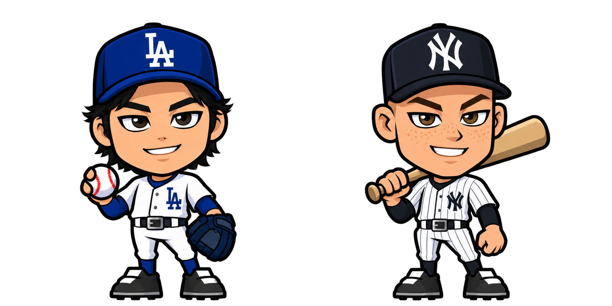
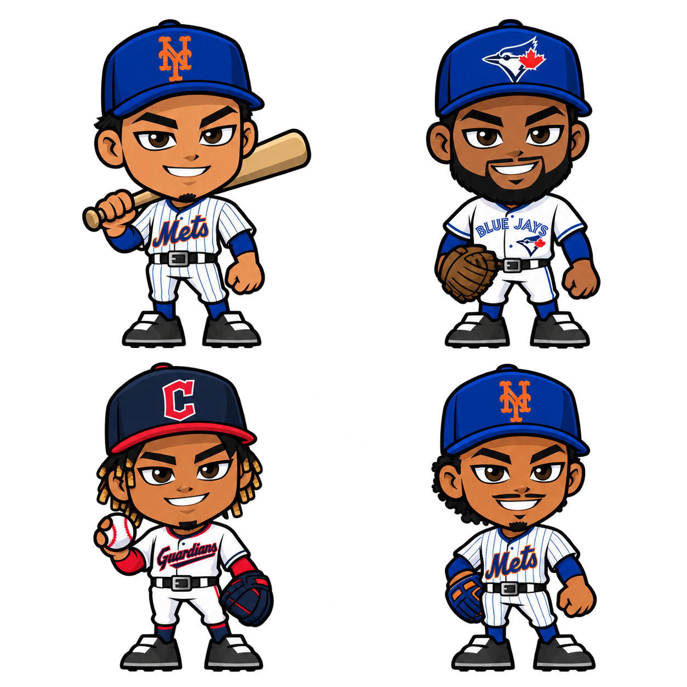
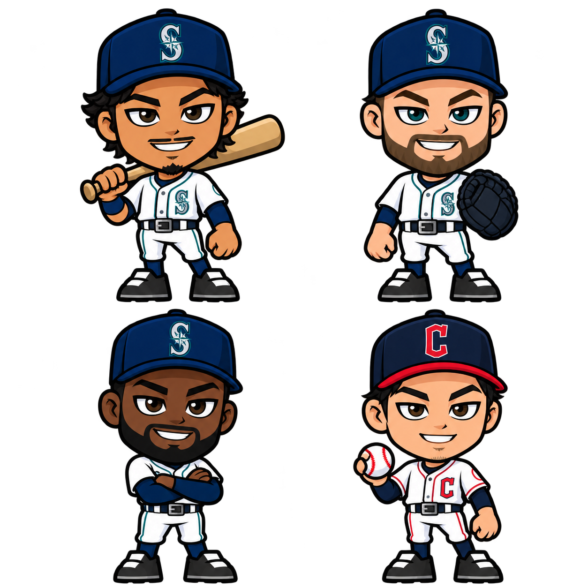
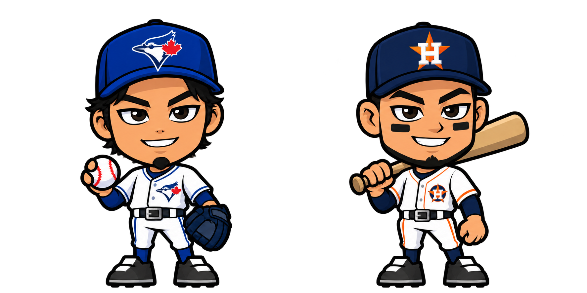

BASEBALL HEROES · 1.0.36Personajes completos con el estilo aprobado
Publicada y comprobada en Railway. Ohtani y Judge utilizan exactamente la segunda imagen que enviaste. Los otros diez se redibujaron siguiendo esa referencia.
Acceso: HOME → TEAM → CARDS → 2026. Abrir el juego · Notas y pruebas.
Los dos personajes aprobados se conservan

Tu PNG original · Ohtani a la izquierda y Judge a la derecha · archivo sin modificarEl PNG se copia byte por byte. El juego muestra ventanas de cada personaje mediante copyPixels y escala proporcional, sin recolorear, reflejar, retocar ni sustituir cabeza, uniforme o cuerpo. Los retratos pequeños son ventanas del mismo dibujo; no se genera otra cara para las cartas.
 Ohtani dentro de WebMain real · misma ilustración aprobada
Ohtani dentro de WebMain real · misma ilustración aprobada Judge dentro de WebMain real · mismo bat, uniforme y proporciones
Judge dentro de WebMain real · mismo bat, uniforme y proporcionesEl cambio frente a la versión anterior
 Antes · 1.0.35 · cabeza semirrealista y cuerpo modular
Antes · 1.0.35 · cabeza semirrealista y cuerpo modular Ahora · 1.0.36 · caricatura completa, ojos grandes y contornos gruesos
Ahora · 1.0.36 · caricatura completa, ojos grandes y contornos gruesosSe reemplazan los atlas de cabezas y el cuerpo de 1.0.35 en el renderizador. Cada jugador usa una ilustración completa y coherente: cabeza grande, cuerpo compacto, ojos expresivos, cejas angulares, sombras sencillas y zapatos grandes. Los atlas antiguos permanecen archivados para la versión anterior, pero ya no se incluyen como dependencias del renderizador actual.
Diez jugadores nuevos en la misma dirección visual

Soto, Guerrero Jr., Ramírez y Lindor · atlas original de image_gen
Rodríguez, Raleigh, Arozarena y Kwan · atlas original de image_gen
Giménez y Paredes · atlas original de image_genLos diez dibujos se generaron con imagegen usando tus imágenes como referencias de estilo. Se conservaron los PNG generados sin editar sus bytes. Los recortes se midieron por personaje; la división horizontal entre filas se coloca en el espacio transparente para conservar las suelas completas. Se verificaron gorras, bates y zapatos dentro de cada cuadro.
Prompts completos y procedencia · Archivos, orden y ventanas nativas.
Cartas, LINEUP y autojuego
 Inventario real · retratos del mismo dibujo
Inventario real · retratos del mismo dibujo LINEUP real · Guerrero Jr. equipado y personaje creado conservado
LINEUP real · Guerrero Jr. equipado y personaje creado conservado Diagnóstico local de presentación · Ohtani aprobado junto a la carta
Diagnóstico local de presentación · Ohtani aprobado junto a la cartaLos retratos y el personaje completo comparten los mismos atlas. El autojuego muestra la ilustración con la aparición y desvanecimiento de la carta; después retira la vista. No intercambia cabezas ni utiliza las cuatro poses del cuerpo rechazado. La colección sustituye los botones de esas poses por la habilidad de la carta, Combo y Luck. Estos dibujos son poses estáticas de presentación, no animaciones nuevas de swing.
Verificación y conservación de partidas
Dos suites locales pasaron: WebMain real desde registro y creación, con compra confirmada/cancelada, entrega con dos cargas, activación, LINEUP y recarga; y un diagnóstico privado que selecciona los doce, comprueba el ajuste completo, el texto, los controles retirados y los píxeles nativos de las imágenes. Los píxeles opacos muestreados de Ohtani y Judge coinciden exactamente con tu PNG, con escalas positivas iguales y sin filtros.
Prueba real local · Sprites y píxeles · Verificación de fuentes y paquete · Prueba pública · Archivos instalados · Retirada de la cuenta temporal.
Solo cambian MLBPlayerArtwork, MLB2026Collection y la presentación de la carta en TeamSimulationPanel. Se conservan catálogo, clases, precios, estadísticas, energía, guardado v24, SQLite v4, equipo elegido, personaje y cabeza de bateo 0.8.6. Se verificó copia de SQLite y se archivó la biblioteca antigua 1.0.30 de forma reversible para liberar espacio; las versiones recientes se conservan. No se reinician cuentas ni temporadas.